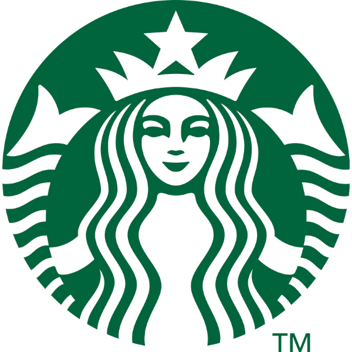
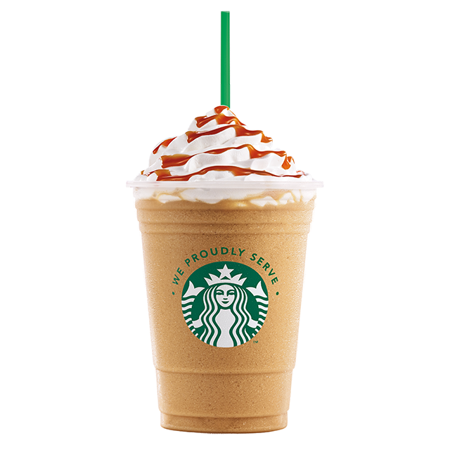

Menu
Kawa
Kubki
Starbucks rewards
Starbucks delivers
Kariera
PL
Znajdź kawiarnię
Potrzebujesz energii?
Zrobimy Ci pyszną kawę!
Od 1971 roku najważniejsza dla nas była, jest i będzie jakość. Naszą pasją jest etyczne pozyskiwanie tylko najlepszych ziaren kawy Arabica i palenie ich z największa starannością. Naszej pasji do kawy dorównuje jedynie zamiłowanie do dzielenia się nią. Niezależnie od tego, czy popijasz ją samemu, czy przyjmując gości, delektowanie się kawą w domu powinno być relaksującym i kojącym doświadczeniem. Przy tak wielu opcjach wyboru, trudno znaleźć tę perfekcyjną filiżankę.
